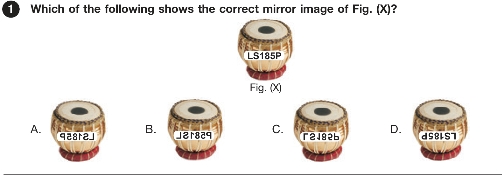
Which of the following shows the correct mirror image of Fig. (X)?
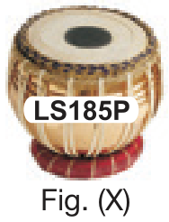
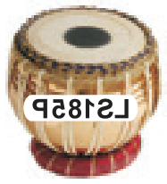
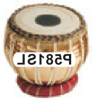
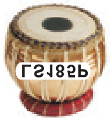
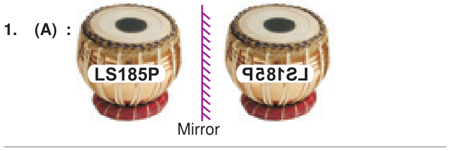
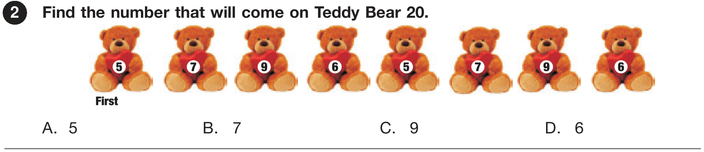
Find the number that will come on Teddy Bear 20.
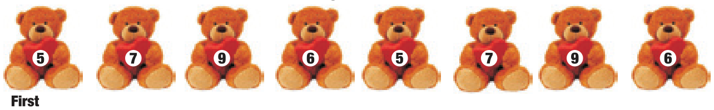
5
7
9
6
The pattern repeats itself after every four figures. So, number on Teddy Bear 20 is 6.
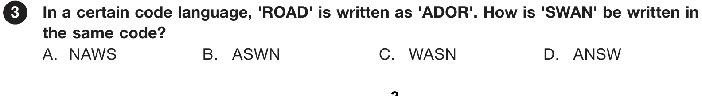
In a certain code language, 'ROAD' is written as 'ADOR'. How is 'SWAN' be written in the same code?
NAWS
ASWN
WASN
ANSW
Letters of the given word are arranged in alphabetical order in its code.
Therefore, the code for SWAN is ANSW.
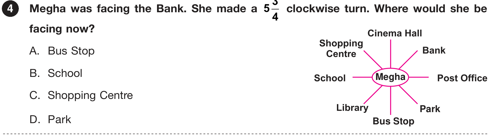
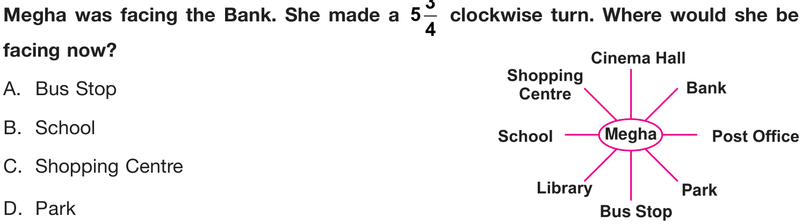
Bus Stop
School
Shopping Centre
Park
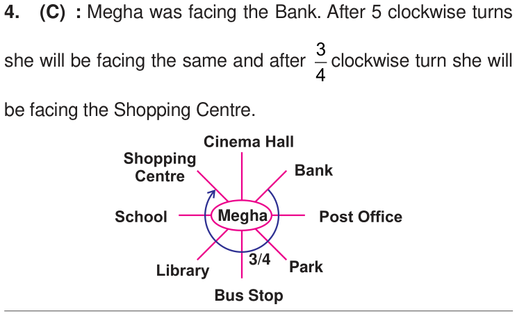
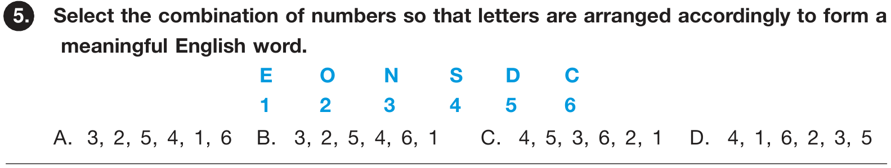
Select the combination of numbers so that letters are arranged accordingly to form a meaningful English word.
E O N S D C
1 2 3 4 5 6
3, 2, 5, 4, 1, 6
3, 2, 5, 4, 6, 1
4, 5, 3, 6, 2, 1
4, 1, 6, 2, 3, 5
The word formed is S E C O N D i.e., 4,1,6,2,3,5.
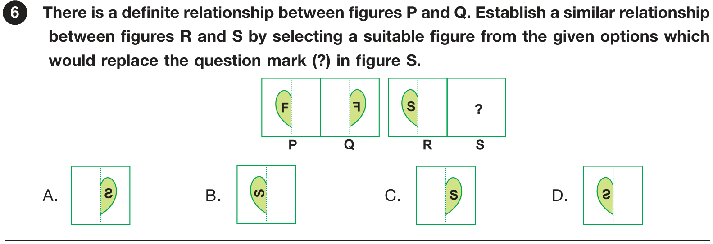
There is a definite relationship between figures P and Q. Establish a similar relationship
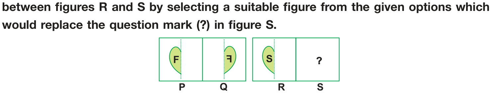
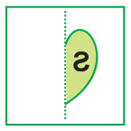
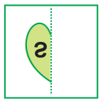
Figure Q is the mirror image of figure P.
Similarly, option A is the correct mirror image of figure R.
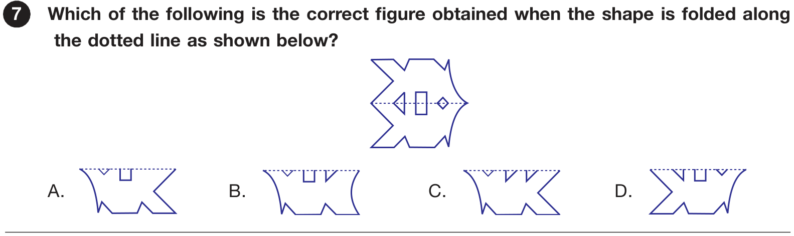
Which of the following is the correct figure obtained when the shape is folded along the dotted line as shown below?
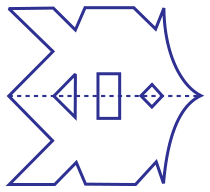
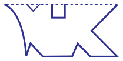
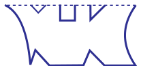
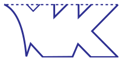
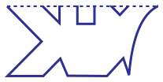
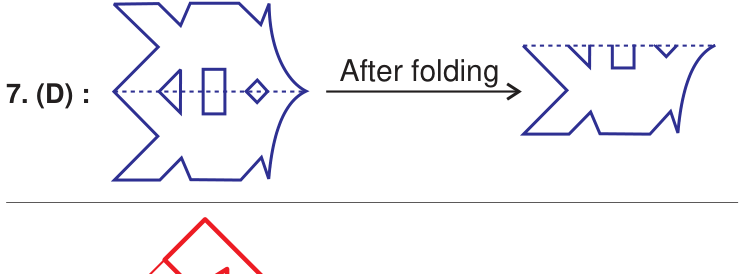
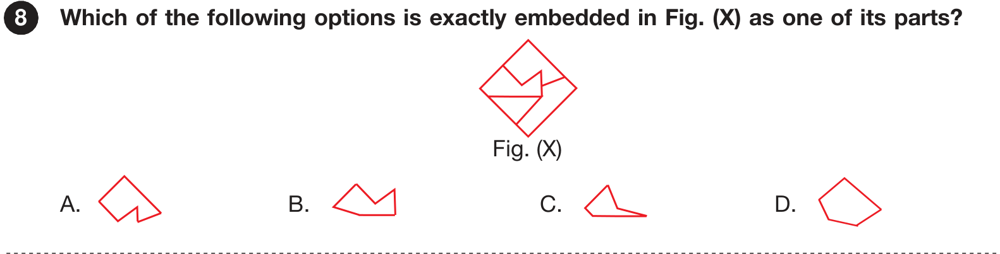
Which of the following options is exactly embedded in Fig. (X) as one of its parts?
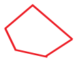
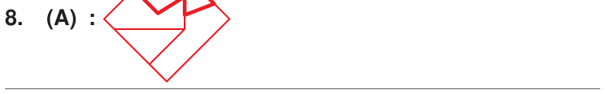
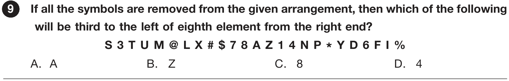
If all the symbols are removed from the given arrangement, then which of the following will be third to the left of eighth element from the right end?
S 3 T U M @ L X # $ 7 8 A Z 1 4 N P * Y D 6 F I %
A
Z
8
New arrangement becomes:
S 3 T U M L X 7 8 A Z 1 4 N P Y D 6 F I
So, eighth element from the right end is 4 and third to the left of 4 is A.
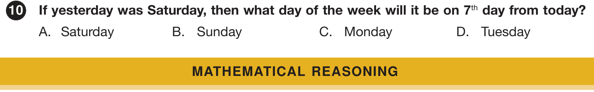
If yesterday was Saturday, then what day of the week will it be on 7th day from today?
Saturday
Sunday
Monday
Tuesday
If yesterday was Saturday, then today is Sunday. So, 7th day from Sunday will be Saturday.
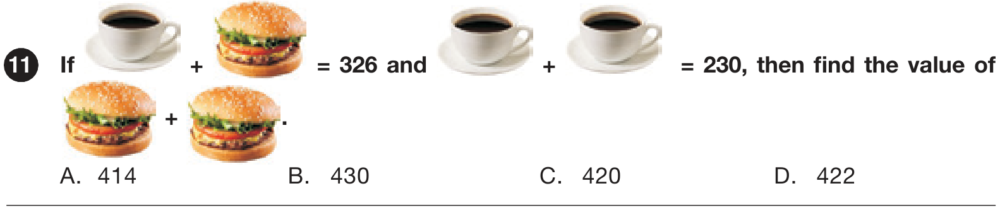
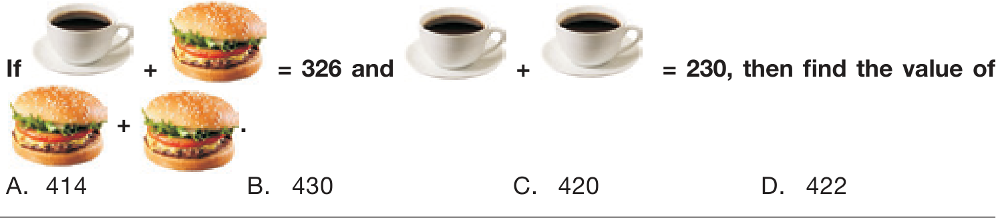
Option A
Option B
Option C
Option D
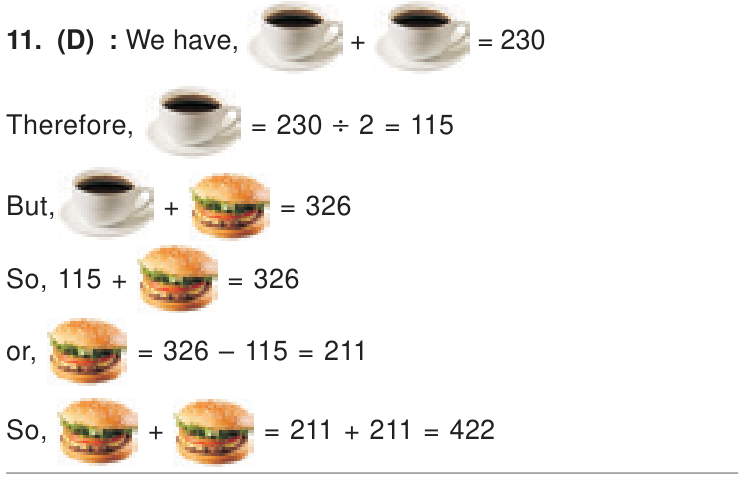
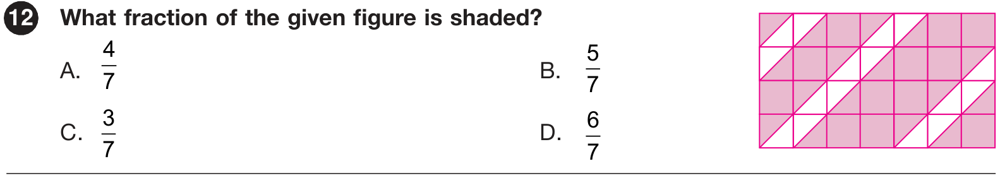
What fraction of the given figure is shaded?
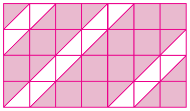
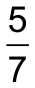
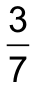
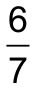
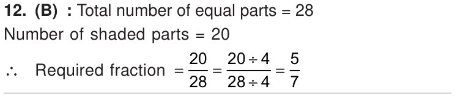
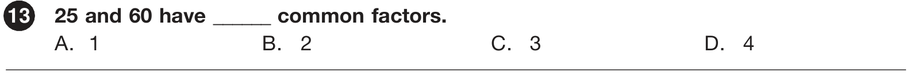
25 and 60 have ______ common factors.
1
2
3
4
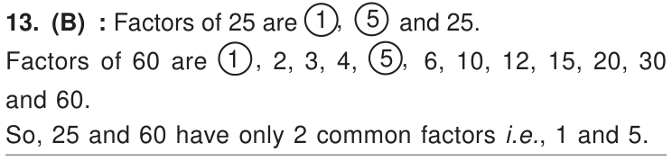
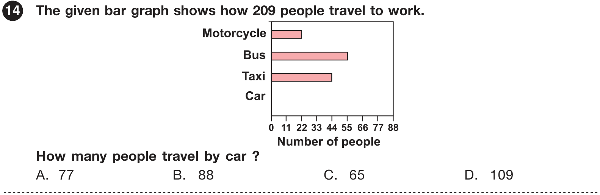
The given bar graph shows how 209 people travel to work.
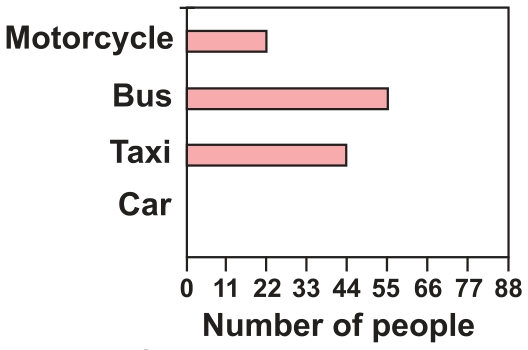
How many people travel by car ?
77
88
65
109
Total number of people = 209
Number of people travel by Motorcycle = 22
Number of people travel by Bus = 55
Number of people travel by Taxi = 44
So, number of people travel by car = 209 – (22 + 55 + 44)
= 209 – 121 = 88
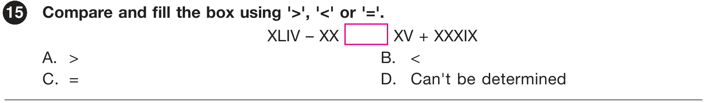
Compare and fill the box using '>', '<' or '='.
XLIV – XX XV + XXXIX
>
<
=
Can't be determined
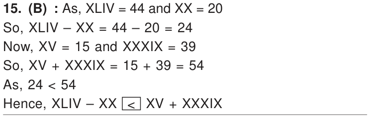
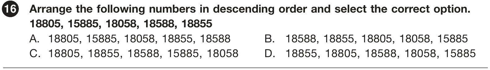
Arrange the following numbers in descending order and select the correct option. 18805, 15885, 18058, 18588, 18855
18805, 15885, 18058, 18855, 18588
18588, 18855, 18805, 18058, 15885
18805, 18855, 18588, 15885, 18058
18855, 18805, 18588, 18058, 15885
Given numbers are: 18805, 15885, 18058, 18588, 18855
Descending order of numbers is : 18855, 18805, 18588, 18058, 15885.
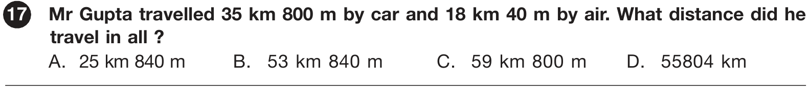
Mr Gupta travelled 35 km 800 m by car and 18 km 40 m by air. What distance did he travel in all ?
25 km 840 m
53 km 840 m
59 km 800 m
55804 km
Distance travelled by car = 35 km 800 m
Distance travelled by air = 18 km 40 m
Therefore, total distance travelled = 35 km 800 m + 18 km 40 m
= 53 km 840 m
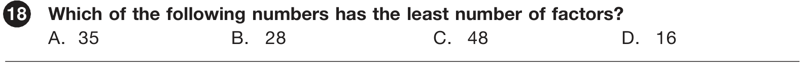
Which of the following numbers has the least number of factors?
35
28
48
16
A. Factors of 35 are 1, 5, 7 and 35.
B. Factors of 28 are 1, 2, 4, 7, 14 and 28.
C. Factors of 48 are 1, 2, 3, 4, 6, 8, 12, 16, 24 and 48. D. Factors of 16 are 1, 2, 4, 8 and 16.
Hence, 35 has the least number of factors.
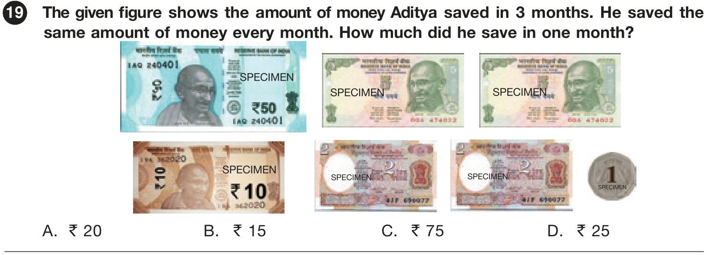
The given figure shows the amount of money Aditya saved in 3 months. He saved the same amount of money every month. How much did he save in one month?
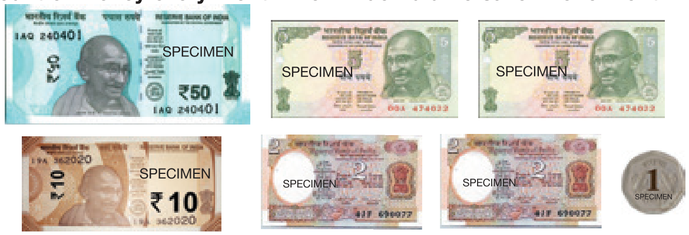
₹ 20
₹ 15
₹ 75
₹ 25
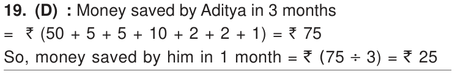
In 73569, the difference between the place value of the digit in the ten thousands place and the digit in the hundreds place is _________.
2500
67000
70500
69500
Place value of the digit in ten thousands place in 73569 = 70000
Place value of the digit in hundreds place in 73569 = 500 Therefore, required difference = 70000 – 500 = 69500
15
6
18
12
Sneha is 11 years 7 months old. Her sister is 3 years 8 months older than her. What is the sum of their ages?
26 years 3 months
26 years 10 months
27 years 3 months
27 years 5 months
There are 69 rows of trees in a land. Each row has 47 trees. What is the total number of trees in the land?
1204
3431
3243
3800
Number of trees in 1 row = 47
Number of rows = 69
So, number of trees in 69 rows = 47 × 69 = 3243
The total length of 2 pieces of ribbon is 220 cm. If the length of one piece of ribbon is 180 cm longer than the other, then find the length of the longer piece.
20 cm
40 cm
200 cm
400 cm
Mohit earns ₹ 5503 in a month. Every month, he spends ₹ 2186 and saves the rest. How much will he save in 2 years?
₹ 90150
₹ 12848
₹ 97608
₹ 79608
Monthly income of Mohit = ₹ 5503
Amount of money spent by him in 1 month = ₹ 2186 So, amount of money saved by him in 1 month
= ₹ (5503 – 2186) = ₹ 3317
Since, 2 years = 24 months
Amount of money saved by him in 2 years i.e., 24 months = ₹ (3317 × 24) = ₹ 79608
To boil the eggs hard you must cook them on gas for 16 minutes. If Neeta puts the eggs to boil at 12:36 p.m., then at what time she must switch off the gas?
12:52 p.m.
1:12 p.m.
1:00 p.m.
1:24 p.m.
Neeta puts the eggs to boil at 12 : 36 p.m. Time taken to boil the eggs is 16 mins.
As, 16 mins after 12 : 36 p.m. is 12:52 p.m. So, she must switch off the gas at 12 : 52 p.m.
Dinesh has 5 boxes of sweets. Each box contains 182 sweets. He packs them equally into some bags. Each bag contains 7 sweets. How many bags does he use?
130
152
147
124
Harsh had 80 kg 150 g of rice. He packed the rice into 12 packets, each weighing 4 kg 500 g. How much rice was left unpacked?
7 kg 200 g
26 kg 150 g
12 kg 950 g
13 kg 950 g
Total quantity of rice = 80 kg 150 g
Quantity of rice in 1 packet = 4 kg 500 g = 4500 g Total number of packets = 12
So, quantity of rice in 12 packets = (4500 × 12)
= 54000 g = 54 kg Quantity of rice left unpacked = 80 kg 150 g – 54 kg
= 26 kg 150 g
9 kg
Rajni bought a story book worth ₹ 2483 and two drawing books worth ₹ 1926 each. Find the total amount of money paid by her when rounded to the nearest tens.
₹ 6340
₹ 4630
₹ 4460
₹ 6344
Cost of a story book = ₹ 2483
Cost of a drawing book = ₹ 1926
So, cost of 2 drawing books = ₹ (2 × 1926) = ₹ 3852 Hence, total amount of money paid = ₹ (2483 + 3852) = ₹ 6335 So, estimated total amount of money = ₹ 6340
The table below shows the points scored by Kabir and Amit in four games of bowling.
If Kabir scored 22 points less than Amit in the 2nd game, then how many more points did Kabir score than Amit in all the four games played?
6
2
8
4
Option A
Option B
Option C
Option D
Which is the heaviest bird?
P
Q
R
Can't be determined
We have, P + Q = 55 kg and P + Q + R = 60 kg
So, 55 kg + R = 60 kg
or, R = (60 – 55) kg = 5 kg
Also, P + R = 45 kg
So, P + 5 kg = 45 kg
or, P = (45 – 5) kg = 40 kg
Again, P + Q = 55 kg
So, 40 kg + Q = 55 kg
or, Q = (55 – 40) kg = 15 kg
Hence, the bird P is the heaviest.
Find the value of A and B respectively.
7, 5
4, 5
5, 4
5, 7
Sanjay is thinking of a 5-digit even number PQRST. P is 3 more than the smallest odd number. Q is a common factor of 2 and 11. R is the product of the first 2 digits. The sum of S and T is 9. T is a multiple of 3. What is the number Sanjay is thinking of?
41436
41463
61636
61663
The smallest odd number is 1.
P is 3 more than smallest odd number. So, P = 3 + 1 = 4
Factors of 2 are 1 and 2.
Factors of 11 are 1 and 11.
Therefore, common factor of 2 and 11 is 1. So, Q = 1
R is product of first two digits.
Therefore, R = 4 × 1 = 4
The sum of S and T is 9.
and T is a multiple of 3.
So, T = 3, 6 or 9
Since, Sanjay is thinking of an even number. So, T = 6
As, sum of S and T is 9.
Then, S = 9 – 6 = 3
Hence, required number = 41436